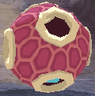
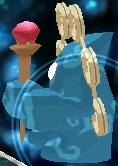

GURUMIN
| 概要 | 情報 | ボス戦 |
| 攻略チャート | ステージ一覧 | 敵キャラ一覧 |
| アイテム一覧 | 行動パターン | GURUMIN 攻略へ |
| ファントム | そのほか |
| 名前 | 画像 | 行動 | 出現場所 |
| エッグタイプ | のろのろと近づいてきて、前転して攻撃してきます。 もっとも標準的なファントムです。 |
ポテト・ナニナノ聖堂 ポテト・メートル回廊 ポテト・マイル宮殿 ポテト・キロミリ通路 ラディス・にぎやか森の細道 ラディス・おどろおどろ道 ラディス・大蛇のけもの道 ラディス・こうもりの隠れ家 スピナ・わらび岩の洞窟 スピナ・忘れ石の洞穴 スピナ・さわがし岩窟 スピナ・くらやみ空洞 ピメント・フェアリーズネスト ピメント・スカイ・ステップス ピメント・ドラゴンズ・バック ピメント・ヘブンズヘルドヒル 大空洞・クリスタルウェイ 大空洞・サファイヤライン 大空洞・ルビークレイブ 大空洞・アメジストロード |
|
| バードタイプ | 同じ場所をぐるぐると移動したり、目からビームを放って
きたり、他のファントムを乗せていたりと様々な行動をとります。 あまり強くないので、1,2発で倒せます。 |
ポテト・メートル回廊 スピナ・忘れ石の洞穴 スピナ・さわがし岩窟 ピメント・フェアリーズネスト ピメント・ドラゴンズ・バック ピメント・ヘブンズヘルドヒル 大空洞・サファイヤライン |
|
| アーミータイプ | パリンと対面している場合は、一定距離を保ち、パリンの
背後にいる場合は近づいて襲いかかってきます。 武器を持っている場合は、その武器を使い、武器を失うと拳 で攻撃してきます。 また、彼らは武器や盾を失っても拾いに行くので注意が必要です。 |
ポテト・メートル回廊 ポテト・マイル宮殿 ポテト・キロミリ通路 ラディス・おどろおどろ道 ラディス・大蛇のけもの道 ラディス・こうもりの隠れ家 スピナ・くらやみ空洞 ピメント・スカイ・ステップス ピメント・ドラゴンズ・バック ピメント・ヘブンズヘルドヒル 大空洞・クリスタルウェイ 大空洞・サファイヤライン 大空洞・アメジストロード |
|
| 超特大エッグタイプ | エッグタイプと行動は似ていますが、その大きさと体力
は段違いです。 また、魔法を使用してくるので注意が必要です。 |
ポテト・マイル宮殿 ラディス・おどろおどろ道 ラディス・こうもりの隠れ家 ピメント・フェアリーズネスト ピメント・ヘブンズヘルドヒル 大空洞・サファイヤライン 大空洞・ルビークレイブ |
|
| ウッドタイプ | 普段は木に化けてじっとしていますが、パリンを発見すると近づいてきます。 攻撃は、自らが倒れて体当たりをし、枝に着けた爆弾をばらまきます。二段階の嫌 らしい攻撃なので早めに倒してしまいましょう。 |
ラディス・にぎやか森の細道 ラディス・おどろおどろ道 ラディス・大蛇のけもの道 ラディス・こうもりの隠れ家 |
|
| プレートタイプ | 上下には移動せず、左右に移動します。パリンが近づくと目から
強烈な魔法を放ってきます。 背面に回り攻撃すると安全です。 |
ラディス・にぎやか森の細道 ラディス・おどろおどろ道 ラディス・こうもりの隠れ家 スピナ・さわがし岩窟 スピナ・くらやみ空洞 ピメント・フェアリーズネスト ピメント・ドラゴンズ・バック 大空洞・クリスタルウェイ |
|
| ブルタイプ |  |
パリンを発見すると突進してきます。しかも、要所要所に爆
弾を置きながらの突進なので注意が必要です。 停止中に攻撃を仕掛けるしかありませんが、爆弾には注意しましょう。 |
ラディス・にぎやか森の細道 ラディス・おどろおどろ道 ラディス・大蛇のけもの道 大空洞・サファイヤライン 大空洞・ルビークレイブ |
| フィッシュタイプ | 水中をゆらゆらと泳いでいるかと思うと、飛び上がって
ビームを放ってきます。 水中にいる場合は攻撃がしづらいのでなかなか倒せません。 |
ポテト・メートル回廊 ポテト・マイル宮殿 ラディス・おどろおどろ道 ラディス・大蛇のけもの道 スピナ・忘れ石の洞穴 スピナ・さわがし岩窟 |
|
| キャットフィッシュタイプ | フィッシュタイプよりもふた周りほど大きいファントムです。
大きさ通り体力もあるのでさらに倒しづらい相手です。 行動パターンはフィッシュタイプと同じです。 |
ラディス・大蛇のけもの道 スピナ・忘れ石の洞穴 スピナ・さわがし岩窟 |
|
| シー・アーチンタイプ | パリンを発見すると、体に電気を帯びて突進してきます。動き も素早く、空中を移動するのでなかなか攻撃が当たりません。 | スピナ・ワラビ岩の洞窟 スピナ・忘れ石の洞穴 スピナ・くらやみ空洞 |
|
| ウィザードタイプ | テレポートしてどこからともなく魔法を放ち、またテレポート
をするという非常に攻撃しづらいファントムです。 しかも、魔法が強烈なのでなおさらいやです。 |
スピナ・忘れ石の洞穴 スピナ・さわがし岩窟 スピナ・くらやみ空洞 大空洞・クリスタルウェイ 大空洞・アメジストロード |
|
| ポットタイプ | 普段は壷に化けていますが、パリンが近づくと時々本性を現し
ます。地面を揺らしたり、砲弾を放ってきたりと多彩な攻撃を仕掛けて
きます。 壷に化けている最中は無敵なので元に戻るまで気長に待ちましょう。 |
スピナ・さわがし岩窟 ピメント・スカイ・ステップス ピメント・ヘブンズヘルドヒル 大空洞・サファイヤライン 大空洞・ルビークレイブ |
|
| エンジェルタイプ | 本当に天使と融合したかは別として、このファントムは短時間です が飛べます。また、攻撃は目からビームなので注意が必要です。 | ピメント・フェアリーズネスト ピメント・スカイステップス ピメント・ドラゴンズ・バック ピメント・ヘブンズヘルドヒル 大空洞・クリスタルウェイ 大空洞・サファイヤライン 大空洞・ルビークレイブ |
|
| 名前 | 画像 | 行動 | 出現場所 |
| カート | 動きが素早く、注意が必要です。パリンを追いかけながら、ビームを バンバンはなってくるので、早めに壊してしまいましょう。 | ポテト・マイル宮殿 スピナ・忘れ石の洞穴 スピナ・くらやみ空洞 |
|
| レーザー銃 | おもちゃのような武器ですが、かなりの威力です。連射性はありませ んが、攻撃範囲が広いので早めに奪ってしまいましょう。 | ポテト・マイル宮殿 ピメント・ヘブンズヘルドヒル |
|
| 盾 | 盾は落ちても再び拾って装備されるので注意が必要です。一応、後ろ からの攻撃は聞くのですが、早めに奪わないと苦戦します。 | ||
| 剣 | 剣も落ちると再び拾って攻撃してきます。攻撃範囲が広くなるので注 意が必要です。一部には魔法を使用してくるものもいるみたいです。 | ||
| レーザースコープ | 遠くからでもバンバンとレーザーを放ってきます。エッグタイプのく せに生意気なので、早めに破壊してしまいましょう。 | スピナ・ワラビ岩の洞窟 スピナ・忘れ石の洞穴 |
|
| ボール |  | ニュージーランドの乗り物です(マジで)。これに乗りながら、エンジ ェルタイプはレーザーを放ってきたりするので、早めに壊してしまいましょう。 | スピナ・さわがし岩窟 ピメント・ヘブンズヘルドヒル 大空洞・サファイヤライン |
| 爆弾 | 遠くから次々と投げてきます。爆風の攻撃範囲はあまり広くないので すが、とにかく連射性に優れているので早めの対処が大事です。 | ピメント・スカイ・ステップス ピメント・ドラゴンズ・バック 大空洞・サファイヤライン 大空洞・ルビークレイブ |
|
| キノコ |  |
このキノコは毒ガスをまき散らします。接近戦の場合は毒ガス対策は
必須です。 しかし、シイタケって本当ですかねぇ? |
ピメント・ドラゴンズ・バック ピメント・ヘブンズヘルドヒル 大空洞・クリスタルウェイ 大空洞・アメジストロード |
| マルチレーザースコープ | とにかく周囲にレーザーをまき散らしてきます。この装備をしたファ ントムが複数いると非常に危険なので、とにかく早めに破壊しましょう。 | スピナ・くらやみ空洞 ピメント・ヘブンズヘルドヒル 大空洞・サファイヤライン |
|
| ステッキ |  | 持っているだけで信じられない魔力を得られる魔法のステッキです。
これを装備したものは、空中を自由に飛び回り、超広範囲に雷を落とすことが
できます。 このファントムを見かけたら、とにかく広い場所で最優先に倒すことをお すすめします。 |
ピメント・ヘブンズヘルドヒル 大空洞・クリスタルウェイ |
| 名前 | 画像 | 行動 | 出現場所 |
| ファントム | そのほか |
| 概要 | 情報 | ボス戦 |
| 攻略チャート | ステージ一覧 | 敵キャラ一覧 |
| アイテム一覧 | 行動パターン | GURUMIN 攻略へ |
ぐるみん
GURUMIN
| 目次へ戻る | ページの上部へ |